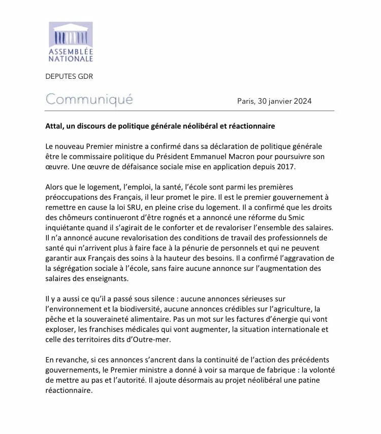

Communiqué parlementaire relayé
Les députés communistes répondent au discours de politique générale de Gabriel Attal
Date indiquée par Facebook · 31 janvier 2024
Repères éditoriaux
Nous avons relayé le communiqué du groupe des députés communistes. La publication et le fac-similé conservent la réaction du groupe au discours de politique générale.
Texte conservé avec la publication
Communiqué du Groupe des députés communistes suite au discours de politique générale d'Attal.
Un discours de droite dure. Un discours libéral et autoritaire. Un discours qui fait peur. Qui dépeint une société inquiétante et peu désirable pour demain. un discours qui assume tout le saccage social et l’infamie des compromissions contre la République.

Sources
Archive rouge · export Facebook · AR-0002-FB-01485
À lire aussi · « On prend les mêmes et on recommence ! » (Fabien Roussel) · Le lien d’origine